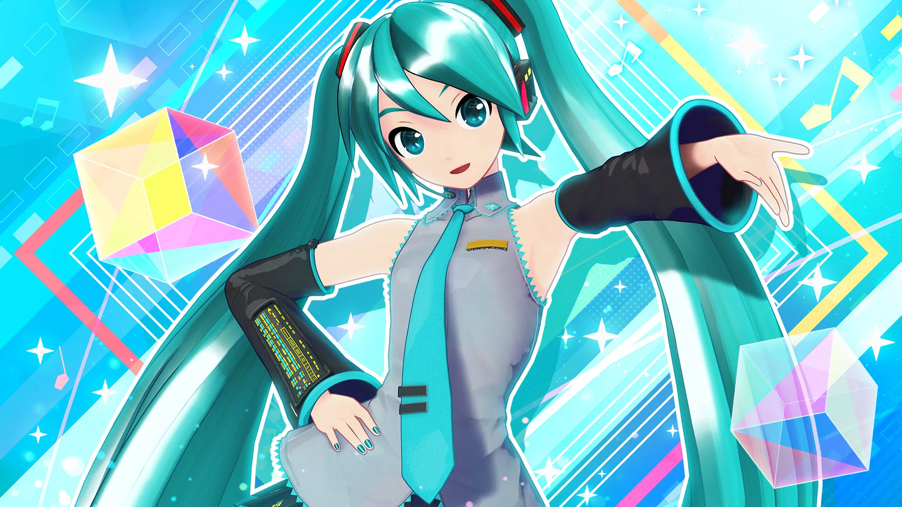

Virtual Pop Diva!

Hatsune Miku, codenamed CV01, is a virtual singer and one of the most recognizable digital characters in the world! SHe was released in 2007 by the Japanese company Crypton Future Media as a voicebank for the singing synthesis software Vocaloid!
Her voice was created using recordings of Japanese voice actress Saki Fujita. Producers can use the software to type lyrics and melodies, and Miku will sing them! Because of this, thousands of musicians around the world have used her voice to create original songs in many different genres!
Miku is often depicted as a 16 year old girl with long turquoise twin tails, futuristic clothing and a digital idol aesthetic!